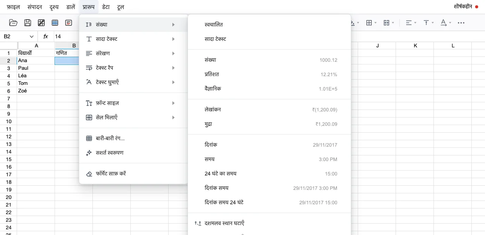

इंटरफ़ेस

ऊपर से नीचे: मेनू पट्टी, बटन पट्टी, सूत्र पट्टी, शीट, शीट टैब और ज़ूम।
मेनू
| मेनू | सामग्री |
|---|---|
| फ़ाइल | खोलना, सहेजना, प्रिंट |
| संपादन | पूर्ववत, फिर से करना, नीचे, दाईं ओर भरना |
| दृश्य | ग्रिडलाइन, फ्रीज़ |
| डालें | चित्र, चार्ट, चेकबॉक्स, ड्रॉप-डाउन सूची |
| प्रारूप | संख्या, टेक्स्ट, संरेखण, सेल मिलाना, बारी-बारी रंग, सशर्त स्वरूपण |
| डेटा | क्रम और फ़िल्टर |
| टूल | सुरक्षा, यह पुस्तिका (उपयोगकर्ता पुस्तिका), DocTools, स्रोत कोड, संस्करण (परिचय...) |
सही का निशान चालू विकल्प दिखाता है: दिखती ग्रिडलाइन, फ्रीज़ सेल, बोल्ड, फ़िल्टर, सुरक्षित वर्कबुक।

बटन पट्टी
| बटन | काम |
|---|---|
| खोलना, सहेजना | |
| ग्रिडलाइन दिखाना या छिपाना | |
| बारी-बारी रंग | |
| सशर्त स्वरूपण | |
| सुरक्षा; वर्कबुक सुरक्षित हो तो नीला | |
| चार्ट डालना | |
| चित्र डालना | |
| पूर्ववत, फिर से करना | |
| फ़ॉर्मेटिंग हटाना | |
| प्रतिशत, कम या अधिक दशमलव | |
| स्वचालित, Arial, 10 | संख्या प्रारूप, फ़ॉन्ट, आकार |
| बोल्ड, इटैलिक, रेखांकित | |
| टेक्स्ट का रंग, पृष्ठभूमि का रंग | |
| बॉर्डर, सेल मिलाना | |
| संरेखण, घुमाव, रैप | |
| फ्रीज़ | |
| स्वचालित योग और अन्य सूत्र | |
| क्रम और फ़िल्टर |
बटन का छोटा तीर उसके विकल्प खोलता है; बटन स्वयं पिछला विकल्प दोहराता है। सँकरी विंडो में अंतिम बटन के पीछे होते हैं।
सूत्र पट्टी
- बाईं ओर नाम बॉक्स: चयन का पता, या रेंज का नाम। उसका तीर नामित रेंज दिखाता है और नाम प्रबंधक खोलता है।
- fx के दाईं ओर सेल की सामग्री, सूत्र सहित: उसे वहीं बदला जा सकता है।
शीट
- दायाँ क्लिक जगह के अनुसार मेनू खोलता है: सेल, कॉलम या पंक्ति शीर्षक, शीट टैब।
- नई शीट में 84 पंक्तियाँ और 60 कॉलम (A से BH) हैं। दाएँ क्लिक, डालें से और जोड़ें (पंक्तियाँ और कॉलम)।
- चयन के कोने का नीला हैंडल भरता है।
टैब और ज़ूम
नीचे शीट जोड़ता है, सभी दिखाता है (शीट)। दाईं ओर − और + ज़ूम बदलते हैं; प्रतिशत पर क्लिक 10% से 400% तक देता है।
पूर्ववत
या Ctrl Z पूर्ववत करता है; , Ctrl Y या Ctrl Shift Z फिर से करता है: प्रविष्टि, चिपकाना, फ़ॉर्मेटिंग, जोड़ना। वर्कबुक खोलने, ग्रिडलाइन दिखाने या छिपाने, वर्कबुक सुरक्षित करने, या नाम या सशर्त नियम जोड़ने पर इतिहास नए सिरे से शुरू होता है। चार्ट इसमें नहीं हैं: वे अपने बटनों से बदले या हटाए जाते हैं।